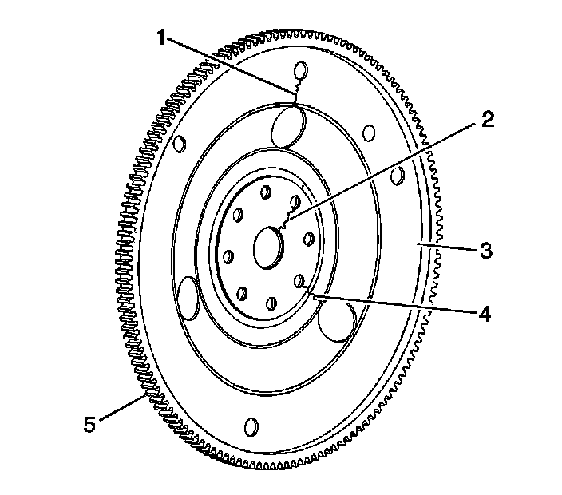

52. Engine Flywheel Cleaning and Inspection
Engine Flywheel Cleaning and Inspection
Cleaning Procedure
Important: In order to maintain the proper component balance, contact surface taper and heat transfer, manual transmission flywheels are NOT to be machined.
1. Clean the engine flywheel in solvent.
Caution: Refer to Safety Glasses Caution (Safety Glasses Warning) .
2. Dry the engine flywheel with compressed air.
Inspection Procedure

1. Inspect the engine flywheel for the following conditions:
* Stress cracks around the engine flywheel-to-torque converter mounting bolt hole locations (1) and/or engine flywheel-to-crankshaft (2, 4)
Important: Do not attempt to repair the welded areas that retain the ring gear to the engine flywheel plate. Install a new engine flywheel.
* Cracks at welded areas that retain the ring gear onto the engine flywheel (3)
* Damaged or missing ring gear teeth (5)
2. Replace the engine flywheel as necessary.